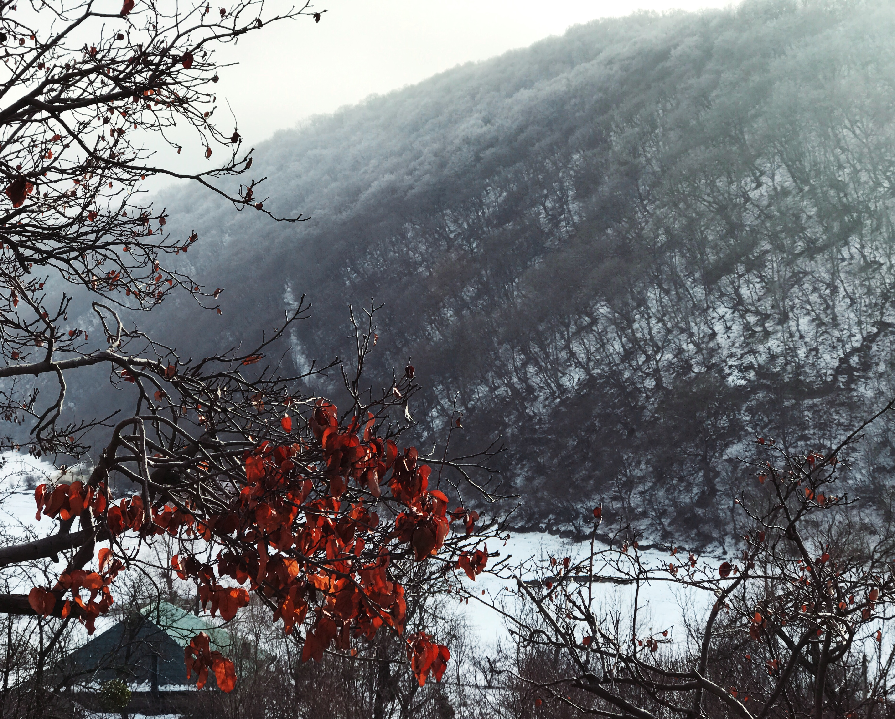
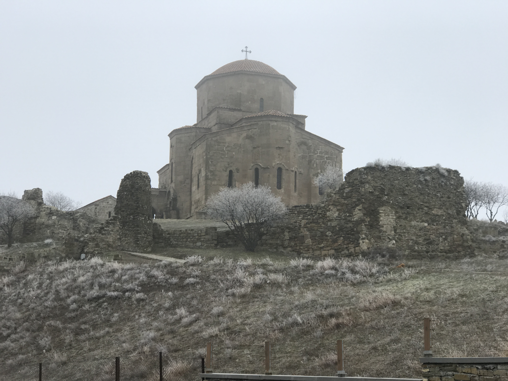
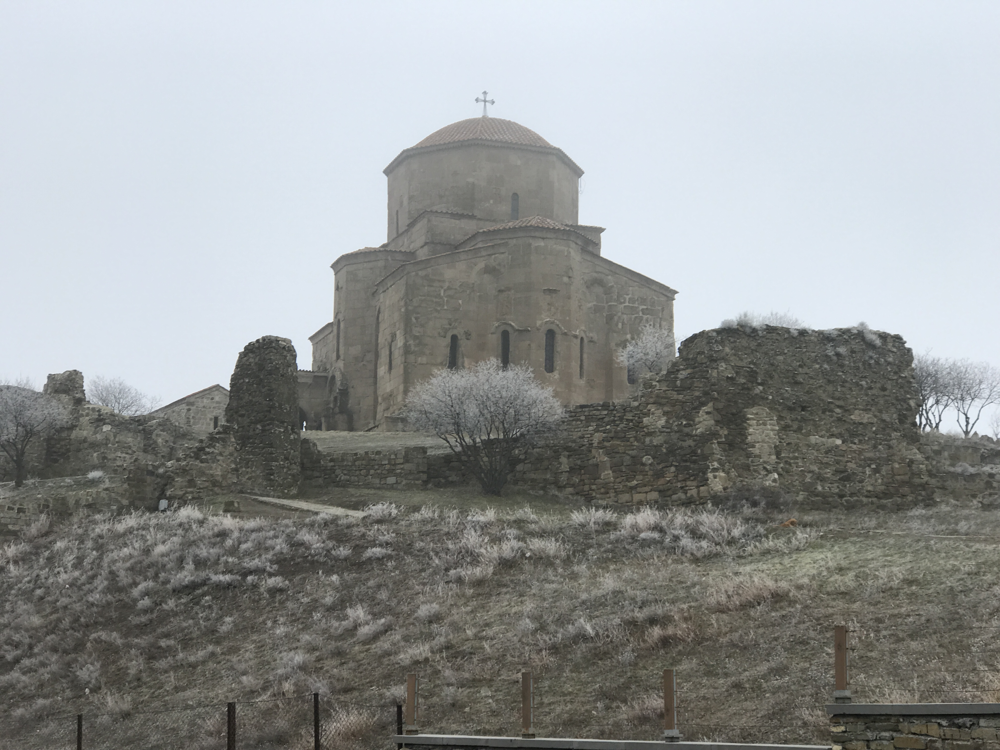

About Me
A first year computer science student specializing in information security.
Gallery
Georgia 2018
Ananuri
Ananuri is a castle complex on the Aragvi River in Georgia, about 45 miles (72 kilometres) from Tbilisi. The fortifications consist of two castles joined by a crenellated curtain wall. The upper fortification with a large square tower, known as Sheupovari, is well preserved and is the location of the last defense of the Aragvi against the Shanshe. The lower fortification, with a round tower, is mostly in ruins.
Jvari
 

Jvari is a town in the northwestern Georgian province of Samegrelo-Zemo Svaneti. The town is situated at an altitude of 280 metres near the Magana River where it flows into the Enguri River; The town is divided in two with "Jvari" lying on the Zugdidi-Mestia highway, and Jvarzeni (Upper Jvari) up the hill. Jvari is located in the far northwest of Georgia, at the beginning of the Mestia highway through the mountains, which provides the rest of Georgia with access to Svaneti. Jvari is a very old settlement in the north-west of Georgia in the Tsalenjikha municipality. According to the legends we can suppose that Jvari has a 2,000 year old history.